EB
GARAMOND
Библиотека
Сбор
макулатуры
Благотворительный сбор
в концертном зале 19:30
Вся собранные средства с продажи
макулатуры пойдут на высадку деревьев
Лекция
«Гоголь»
Открытые чтения
и лекционный материал
Никола́й Васи́льевич Го́голь — русский прозаик,
драматург, критик, публицист, признанный
одним из классиков русской литературы
Cуббота
1 октября
1 октября
Зал
Regular
Medium
SemiBold
Bold
ExtraBold
Начертания
Eb Garamond
Regular Italic
Medium Italic
SemiBold Italic
Bold Italic
ExtraBold Italic
Thomas Harris
Le silence des
agneaux
Philip K.Dick
Do Androids Dream
of Electric Sheep?
Haruki Murakami
Noruwei de
nor mori
Михаил Булгаков
Мастер
и Маргарита
ЭнциклопедияEB Garamond — классический шрифт семейства Garamond, при создании которого использовалось начертание Клода Гарамона, шрифтовика XIV века.Шрифт используется для книжного
и журнального наборов, иногда,
как гарнитура для набора газет.
№14578/14ИЗДАНИЕ 1898
Пускай погибну я, но прежде
Я в ослепительной надежде
Блаженство темное зову,
Я негу жизни узнаю!
Особенности шрифта
Круглые капли, сильный наклон курсива
засечки средней толщины
Быть
или не быть?
Владимир Маякоский
Послушайте!
№12345
читательсикй билет
Антон Чехов
29.02.1860
Егор Шлаферов
Б22ДЗ09